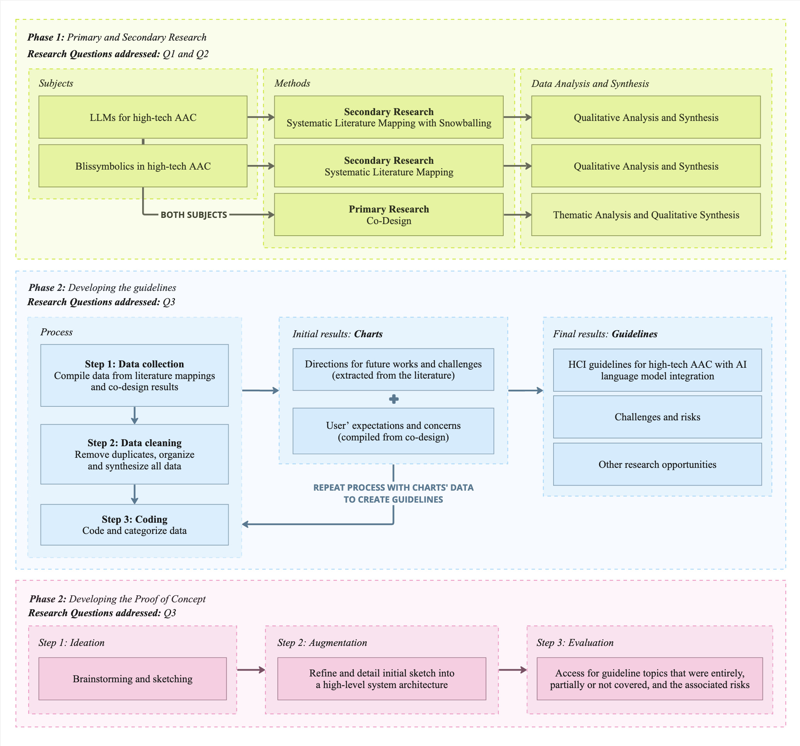
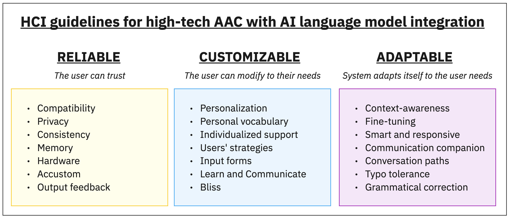
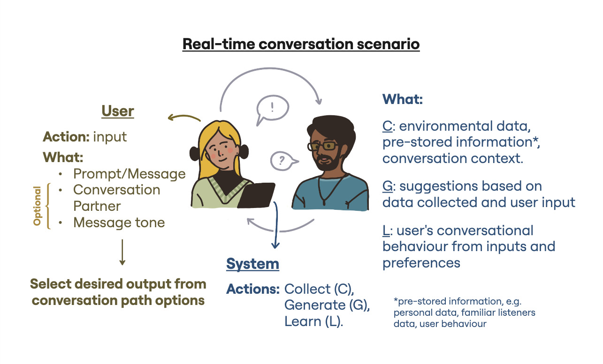
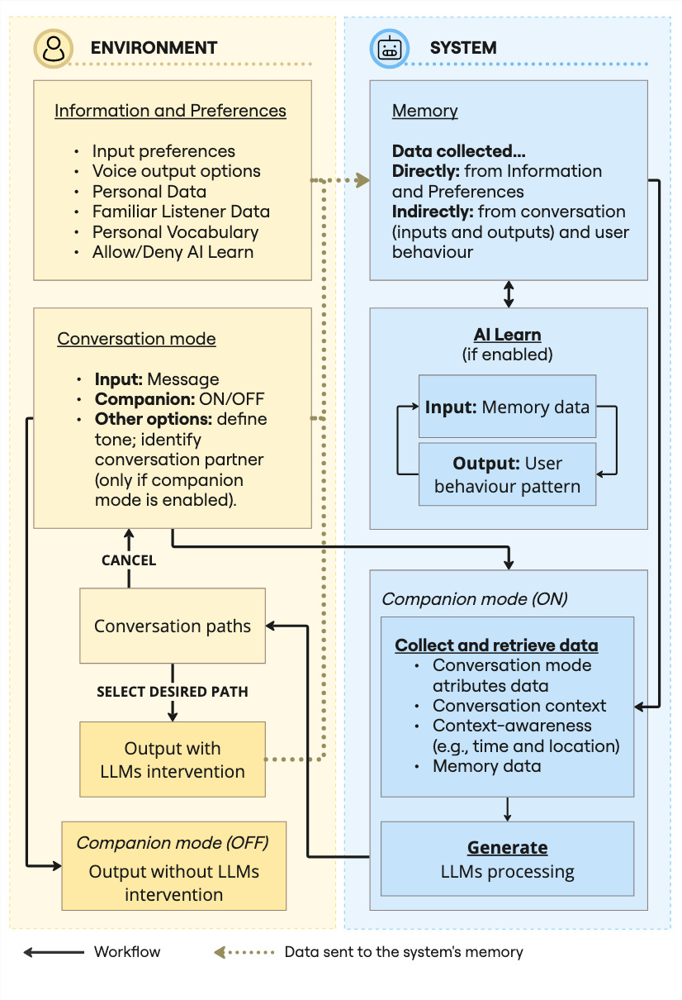

Guidelines for complex AAC systems with LLMs
[Full text available here]
Abstract
Some individuals with complex communication needs rely on Augmentative and Alternative Communication (AAC) devices for daily interactions. However,
AAC users often struggle to communicate during real-time conversations, considering the high amount of physical and mental effort it takes to compose
their messages. While users can prepare for conversations by adding new words and phrases to their communication devices, pre-programmed messages may not
always cover everything that is necessary to express a person's intentions during a real-time conversation. To address this issue, researchers are exploring
the use of artificial intelligence (AI), particularly large language models (LLMs), to improve AAC systems. However, it is crucial to carefully analyze the
benefits and drawbacks before rushing to create new technological interventions. This study examines the existing contributions and lists opportunities and
challenges for applying LLMs to AAC software, collaboratively with users. Additionally, the study addresses the usage of Blissymbolics, a language with grammar
and vocabulary but no phonology, which plays an essential role in assisting individuals with congenital conditions in developing their literacy skills. Two secondary
research studies were conducted to systematically and critically map the relevant literature on both LLMs and Blissymbolics uses for AAC. The primary research
followed a co-design approach and engaged AAC users and familiar listeners who shared their expectations, concerns, and ideas about future LLM integration into
AAC devices. The data collected from the primary and secondary research was used to generate comprehensive human-computer interaction guidelines for developing
robust AAC systems that use AI language models. Moreover, the opportunities, challenges and risks involved are also discussed. Furthermore, this work applies the
guidelines proposed and showcases their adaptability by developing and detailing a conceptual AAC system that uses LLMs.
Keywords: human-computer interaction; augmentative and alternative communication; large language models; artificial intelligence; blissymbolics.
Goal and Research Questions
Rather than hastily developing novel AI interventions, this work aims to take a step back and provide designers,
developers, and researchers with comprehensive human-computer interaction guidelines and reflections for integrating
reliable, customizable, and adaptable AI language models into high-tech AAC systems.
Additionally, this work addressed the use of Blissymbolics which, as a language with no phonology, plays an important
role in bridging language and communication for children and adults with complex communication needs.
RQs
Note: The first two questions were used as sub-questions to address the third and main research question. This approach was taken to ensure that all topics and aspects of research would be thoroughly explored and analyzed.
Methods
The research method was divided into three phases. The first phase involved conducting both primary and secondary research to establish the foundation of this work. The second phase focused on developing the guidelines, and the third phase involved applying them to create the Proof of Concept for this work.
 The secondary research comprised two systematic literature mappings in which similar methods were applied for data collection, analysis and synthesis, ensuring consistency.The primary research followed an Inclusive Design approach, using the co-design method, thematic analysis, and qualitative synthesis of the findings. Co-designers shared their concerns and expectations, discussed the benefits of the Bliss language and brainstormed ideas for future AI and AAC applications.
Participants: Four collaborators were recruited, including individuals with communication needs, familiar listeners, and an expert in the Blissymbolics language.
Note: All co-designers with communication needs had cerebral palsy, which affected their verbal speech production. This study was approved by the Research Ethics Board of the Ontario College of Art and Design University, Nº 102400.
Insights
Guidelines
Our HCI guidelines introduce three principles for creating robust AI interventions for high-tech AAC. In other words, all AAC software that targets an LLMs integration must be: reliable, customizable and adaptable. By reliable, we emphasize on offering a system that the user can always trust and rely on. On the other hand, customizable is related to having a system that allows the user to easily modify it to their needs, preferences and unique capabilities. Lastly, adaptable is associated to a system that adapts itself to the user's needs, according to their preferences, environment and situation. All three principles are further divided into seven categories each.
The guidelines proposed are meant to be flexible and should not be followed rigorously but adjusted according to each context. Please check the thesis for the full description and discussion on all 21 topics.
Proof of Concept
Based on the previously detailed guidelines, an LLM-based AAC software was conceptualized as the Proof of Concept. The next images show the initial sketch of the brainstormed system, which was polished and detailed by creating a high-level architecture diagram of the system.
 In the thesis, the Proof of Concept is detailed and its attributes are compared with the proposed guidelines. The categories that were fully, partially or not addressed are also accessed and discussed. This demonstrated the guidelines’ adaptability to different contexts and the importance of acknowledging the points that are not covered.